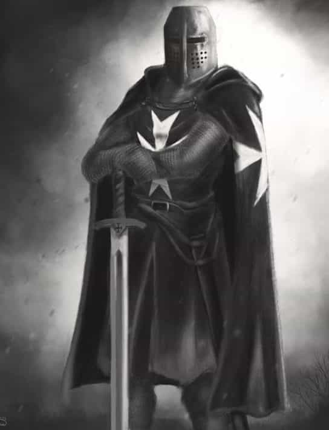

Soldiers of the Ottoman Empire were routed on September 11, 1565 in what came to be known as “The Great Siege of Malta”. They were humiliated and forced to retreat from what was supposed to be an epic campaign of conquest for the greater glory of Allah, the Merciful. Was it a coincidence that Islamic terrorists chose the same date to destroy the twin towers in New York?
Let us start from the beginning. The Knights of Saint John, or Knights Hospitallier, were originally a religious order founded in the 12th Century in the Holy Land. Their mission was to care for the pilgrims who entered the Holy Land, and defend them from any threats on the perilous road to Jerusalem. They were a religious as well as a military order, created under a papal charter, which meant that they answered to no one but the Pope.

Fast forward four centuries. The Knights still lead a never-ending struggle against the forces of Islam. The Crusades were ancient history. The people had all but forgotten them. The Knights of St John were considered obsolete relics of a bygone age. Other orders of Crusaders, such as the Templars, had been extinct for more than two centuries.
The Knights of St. John had been forced from their Fortress in Rhodes in 1522, and for a while were homeless, until they laid claim to the Island of Malta, which was given to them by the Holy Roman Emperor, Charles V, grandson of Fernando de Aragon (Machiavelli’s model of a ruler in “The Prince”). Fernando had expelled the Moors from Spain after eight centuries of invasion, and Charles V himself led a lifelong struggle against the Crescent and Star.
The Grand Master of the Order of St. John, Jean Parisot de la Valette, was 71 years old at the time. He had a personal stake against the Muslims, having been a knight since he was 18, participating in fights against Islam throughout his whole life. His family had served in five different crusades, with distinction, and he was raised with tales of their epic bravery. He had been defeated and expelled from Rhodes years earlier, and had even been a galley slave to the Muslims for a year, rowing up to 20 hours a day, before escaping and swearing revenge.
The Knights survived by raiding Ottoman naval trade routes and basically making life impossible for the Turks. The knights were hardened warriors, great sailors, and pious men. Most of them were the 2nd or 3rd sons of aristocracy, refined noblemen with no inheritance. They were considered the most formidable fighting force in Europe, and were indeed elite in every sense.
Suleiman’s Desire
Since its foundation in the 7th century, Islam had wanted to achieve one feat: invade Europe. These primitive, desert dwelling barbarians had spent most of their history killing one another, until Mohammed united them against one common enemy: Western civilization.
The Ottoman leader, Suleiman “the Magnificent”, was the most powerful man alive. His empire was ridiculously large, stretching from Vienna to Babylon, all the way to Aden, in the southernmost part of the Arabian Peninsula. His titles included Vice-Regent of God on Earth, Lord of the Lords of East and West, and even Possessor of men’s necks, since he beheaded just about anyone who displeased him. But alas, such an empire was not enough. He had set his sights on Europe, and there was not a force on earth powerful enough to stop him. Or so he thought…
The Knights of St John had been a thorn in his side for long enough. They were massively effective at crippling Turkish operations from their new home in Malta, assaulting the Ottoman ships at sea. These western corsairs were led by the intrepid Romegas, a legendary Knight that had joined the order at age 15, and a close friend of La Valette’s. Romegas was considered one of the greatest mariners of his time. He had taken lots of booty and several high-ranking prisoners on his sea raids, and Suleiman had enough. He decided to crush the Order of Knights, once and for all.
Assembling a massive army of 48,000 troops aboard 200 ships, among them elite, scimitar wielding janissaries called “The Invincible Ones” and drug-crazed layalars that wore the skins of wild beasts to battle. Their only concern in life was to slaughter Christians and die a glorious death, to be able to enter paradise and enjoy the 72 virgins promised to them by their prophet.
Who were their opposition? A mere force of 700 knights, keeping watch on a barren little island. Surely, they were no match for the Vice-Reagent of God on Earth. In March 1565, the Muslim fleet set out, determined to obliterate the Western world, and subjugate Europe under Islam’s boot forever.
Alone and Surrounded
Surely enough, La Valette’s intelligence warned him of the impending apocalypse, rapidly sailing directly towards him and his brave knights. He sent messengers to all of the European kings, asking for aid against the coming darkness. None answered, save one: Charles V of the Holy Roman Empire. A legendary bulwark against Islam, Charles promised assistance if they could hold out long enough. For the time being, it seemed, the Knights were on their own.
The Island of Malta had three main fortresses: The Fortress of St Angelo, St Michael and the recently constructed St Elmo, on the peninsula of Mount Sciberras. Both of them were solid structures, and even though they were nothing compared to their original fortifications on the island of Rhodes, they would have to do. La Valette devised a strategy to mount a defense as best as they could, but the situation for the Knights was quite bleak.
The fortifications of Malta
There were 700 knights defending the island, and around 8,000 Maltese soldiers. La Valette swore that there would be no retreat, no surrender. They gathered in a final prayer and braced themselves for the assault. It is said that after the prayer, all weakness disappeared from their hearts, and any petty animosities between them were dissolved. The power of faith made its presence felt.
La Valette, himself a man of deep faith, is said to have stated:
It is the great battle of the Cross and the Quran which is now to be fought. A formidable army of infidels are on the point of invading our Island. We, for our part, are the chosen soldiers of the Cross, and if Heaven requires the sacrifice of our lives, there can be no better occasion than this.
He knew that this was not a fight he would win with brute force, if at all. Cunning, faith, and bravery were to be his tools for survival.
The Onslaught Begins
The first attack launched by the Ottomans was on St Elmo. Relentless artillery fire and waves of assaulting Ottomans rained upon the defenders. A mere 100 knights and 500 soldiers held the fort. They were commanded to fight to the last man. The Turks were confident they could take the fort in three days. Yet after weeks, the defenders were still battling on.
The defenders were quite ingenious, and devised all sorts of incendiary devices. They developed a primitive hand grenade consisting of a clay pot filled with the famous Greek Fire, a napalm-like substance. They hurled these towards their opponents with devastating effects: the shrapnel would explode and damage enemies by the dozens.
The knights invented large fire hoops, wooden rings wrapped in layers of flammable material, such as brandy, turpentine, gunpowder, and cloth, they would get ignited and be rolled downhill towards the Turks by the hundreds.
They also invented the Trump, a long hollow tube filled with flammable sulfur resin and linseed oil that, when lit, would spit fire for several meters for as long as half an hour. The Knights would use these primitive flamethrowers at strategic chokepoints, that would hold back any advance by the attackers. The Turks wore long robes, so being set on fire was quite devastating to them.
After weeks of fighting and being bombed, the defenders were malnourished, sleep deprived, and disfigured to the point of being unrecognizable. Many were gravely injured, limping badly, and bandaged in improvised cloths, but their conviction did not falter. They received reinforcements and supplies from the main fort of St Angelo, with the message from their Grandmaster to fight to the death.
To make matters worse, the arrival of Drajut, known amongst his men as “the drawn sword of Islam” and “the scourge of the Christians,” reinvigorated the Turkish forces. He brought another 1,500 of his elite warriors. The bombardment continued, and the Turks kept trying to charge into the fortress. Soon, a cannon splinter injured Drajut. He was dragged off to his tent. The drawn sword of Islam had met his end. Morale in the Turkish army began to falter.
Enraged, Mustapha Pasha, now commander, ordered the fort surrounded by the entire Turkish fleet. The largest of their cannons were moved to the front, and the defenders were pounded relentlessly. The latter gathered, said their prayers, and defiantly tolled the chapel bell for one last time. Those who couldn’t stand were sat in chairs, fully armed, their souls commended to their Lord Jesus.
The Turks poured in and finally the defenders were defeated. All of them were slaughtered, and Suleiman’s Red Crescent was put in place of the flag of the Knights of St John. But they shuddered, for across the bay was the significantly larger and more impressive St Angelo. It had taken them four weeks to overrun the smaller fortress, and they had lost almost 10,000 men.
Terror Tactics
Mustapha Pasha knew that he had to break the defenders spirit, because he had seen how much their bodies could withstand. So, he ordered the deceased knight commanders to be decapitated. Their heads were put on pikes, and their headless bodies were sailed across the bay to the remaining defenders, fixed atop crude wooden crosses, a mockery of their faith. La Valette responded in kind. He ordered the Turkish prisoners decapitated, and shot their heads across the bay with their largest cannon. The message was clear: no retreat, no surrender.
The bombardment began. There was relentless shelling of the fortress, and an attack from the south side. The Turks were determined to take this little patch of land. Mustapha had a master plan: while the Christians were busy defending the south side, ten large ships with 1000 elite janissaries would storm the north end, but La Valette had prepared for this eventuality. He left Chevalier de Guiral with a 5-gun battery placed at the base of the fort. He could scarcely believe his eyes as the Turks sailed right into his trap.
At the ideal range, he ordered his men to open fire. Nine of the 10 boats were destroyed, 800 janissaries sunk into the water on the spot. Only one ship got away, and the frightened look in their eyes sent fear into the heart of the Muslims. The defenders opened the gate and charged out, and overwhelmed the attackers who ran for their lives. St Angelo survived another day.
Mustapha surrounded the fortress, and continued bombarding the Christians. For over a week, all the Turkish guns thundered upon the defensive positions. The bombardment could be heard from Sicily, over 20 leagues (100 km) away, and the people there were awestruck that any man could survive such a hellfire.
The Turks renewed their attack and poured in from all sides. Victory would be theirs at last, it would seem. They breached the walls, but found themselves upon a second layer of fortifications. Cannon fire rained on them, and they were enclosed in a very effective death trap. After some time, the locals leaped from their defensive positions and forced the Turks to retreat. Again, they were defeated.
Several times the attackers breached the walls, but they were always met with effective funneling towards these kill zones, with an organized wall of pointed pikes and musket fire eager to greet them. La Valette himself grabbed his spear and led the charge several times to push back the attackers. Despite his advanced age, he was a brave and proficient fighter. The sight of their leader leading the attack, inspired the knights to hold back wave after wave of Turkish attackers, in several occasions where all hope seemed lost.
The Will of God
The death toll for the Muslims was catastrophic. Disease was rampant in their ranks, the corpses of friend and foe rotted all around them. Their supplies were running out, including gunpowder. Over 130,000 cannonballs were fired upon the Maltese defenders, in total. The summer heat was scorching them, and the water on the island had been poisoned by the locals before retreating. Their morale was fading. Rumors spread to the commanding officer’s tent, of soldiers whispering “It is certainly not Allah’s will that we take this forsaken island.”
They tried all manners of stratagems to destroy the defenders. They tried digging tunnels, but the Knights collapsed them with mines of their own, and sent soldiers to fend off the tunnel makers.

Then, Mustapha prepared his siege tower, a massive behemoth, taller than even the ramparts of the fortress, to invade. But La Valette ordered his men to remove stone from the base of the walls, and fired upon the tower with huge cannons, containing two cannonballs held together by a chain. The strategy was massively effective and destroyed the tower utterly. The defenders cheered as they saw the Turks jumping from the collapsing contraption, spitting oil and fire upon their own ranks.
Winter was coming, and victory seemed nowhere in sight for the attackers. Mustapha ordered his men to take the nearby walled city of Mdina. His army approached, but was met by heavily armed soldiers manning the walls shooting cannons. “A second St Elmo!!” screamed his soldiers, as they retreated. But it was all a ploy, the governor, foreseeing this turn of events, ordered civilians, women and children, to man the walls, dressed in armor and carrying pikes.
In another attempt to destroy the attackers, the Turkish forces assembled a massive bomb, packed with gunshot and gunpowder, and rolled it into the Christian positions. The latter responded, rolling the fiendish contraption right back at them, resulting in a spectacular explosion. Hundreds died.
The Knights did not display much tolerance with the muslim invaders,
Salvation
Finally, after all hope of salvation had faded from the defender’s hearts, a relief force was in sight. Over 10,000 men in 28 ships had arrived; soldiers from all over Europe, inspired by the courage of these knights had come to join in the fight. Even then, they were outnumbered massively by the Turks. Mustapha ordered his men to charge against the relief force, but they were severely weakened after months of fighting and rampant disease.
In Helm’s Deep style, the Christian relief force charged into the heart of the Turkish army, destroying the Turks utterly. It was a blood bath; the Muslims were slaughtered, chased around the whole island, and picked off. They scrambled to board their ships and leave. It was a crushing victory.
Out of the 48,000 invaders that initially set sail to terrorize Europe, only 10,000 made it back home. The knights suffered heavy losses, too, but by some miracle, victory was theirs. Their sacrifice was immense; the Western world owes these men more than we will ever know. If not for them, Europe would’ve been converted long ago, and we would most likely be speaking Arabic (and sodomized from a young age).
Knights looking from the ramparts as their enemies are crushed
Both Romegas and La Valette survived the fighting. After the siege, the Knights were commended and all of Europe hailed them as heroes. They had heard tales of their legendary exploits, charging in the face of seemingly insurmountable odds, and were inspired. Many donations were made to the Knights, and with them, The Citadel of Valetta was built, in honor of the Grandmaster La Valette. The Pope sent his best engineers and the city was planned and designed as a solid fortress ahead of it’s time, to defend Christendom against any future attacks.
Their victory had a profound impact across all of Europe. The local princes realized that the only way to defeat Islam was to stop warring amongst themselves and unite against the common threat. This resulted in a vast fighting force that seven years later crushed the Turks once again at Lepanto, ending the Ottoman sea superiority forever. Romegas was once again in the front lines of this battle.
Romegas died several years later in Rome, after a long life of fighting Islam at every turn. La Valette was offered the position of Cardinal, but he refused. The sword was the only path he had known for his entire life. He headed the reconstruction of Malta and died a peaceful death only a few years later in 1568. But tales of their heroic deeds would last for centuries to come. This would come to be known as the last epic encounter between Crusader Knights and Islam.

Victory
Conclusion
There are lessons to be learned from these events. It is said that those who do not know their history are doomed to repeat it. La Valette and his knights were considered obsolete, useless fossils by their contemporaries. Many people respected the Knights of St John, but the majority laughed at their traditions and old-fashioned way of life.
But the Knights knew in their hearts the truth. They did not let public opinion sway their convictions. They did not follow the rest of the civilized world in the descent to ignorance, decadence, and madness into forgetting what it is that makes us great. Their faith and their traditions were sacred to them. They held watch, silently, for years, until destiny finally called.
I invite you, fellow reader, to do the same. Forget about political correctness and the opinions of the masses. Search your heart for the truth. Meditate, isolate yourself, get disconnected from the insanity of the modern world. Take some time for yourself, get in touch with nature, and in turn, your own nature. Then, you will begin to see the truth. In the silence of your mind, you will find the answers.
It only took 700 of these Knights to save Europe. Now, Europe is threatened again, this time from the inside as well as foreign invaders. Maybe there will be enough awakened, red pilled souls to stem the barbaric invasion.
Let us prepare and strengthen ourselves. Maybe destiny will call us for a hero’s journey. In the meantime, let us see what we can do to preserve our ancestral homelands and our traditions. Do not allow the sacrifice of the brave men of Malta to be in vain. Strong men are needed now, more than ever.
Read Next: Clash Of Steel And Wills: The Story Of The Battle Of Lepanto